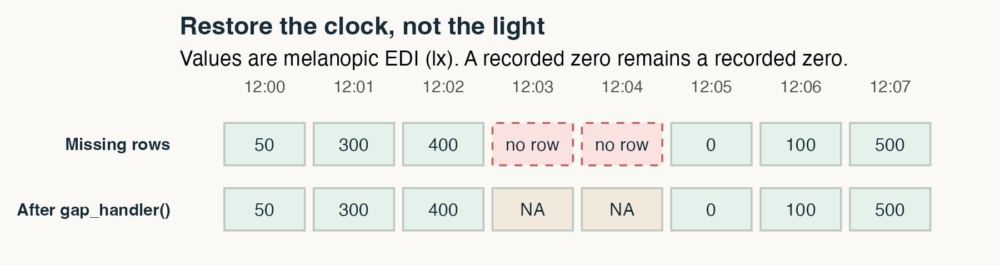
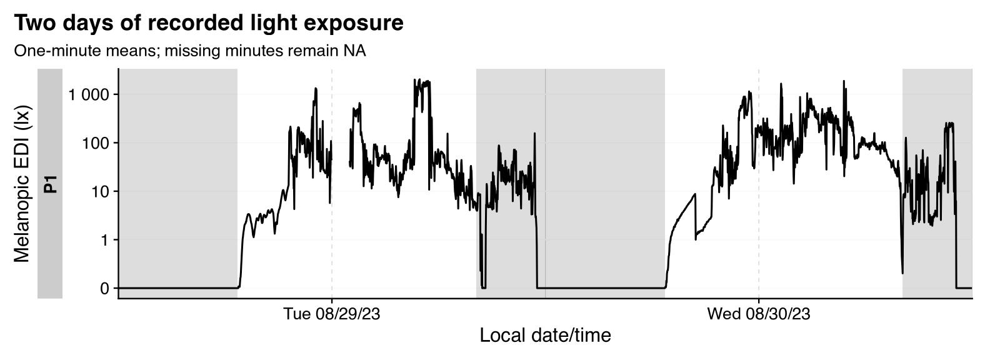
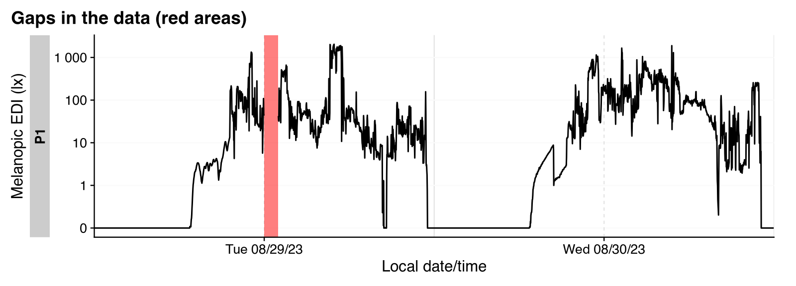
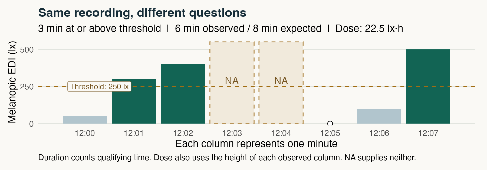
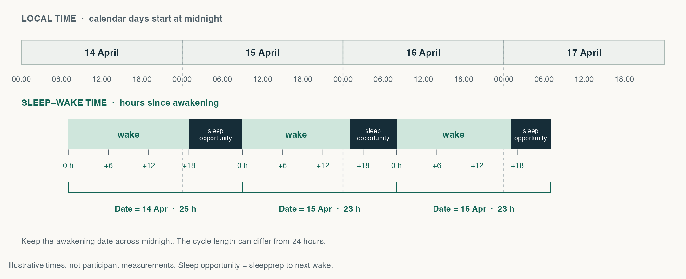
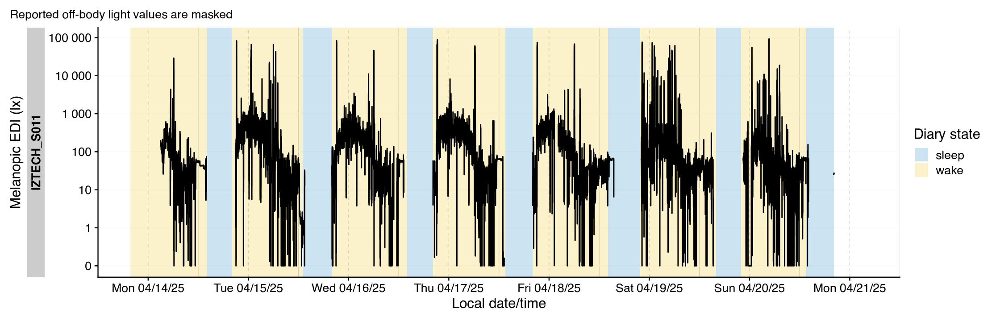

Sleep Europe 2026: Masterclass personal light exposure
One interactive workshop: reproducible light-exposure analysis with LightLogR and Global Light Commons.
Sleep Europe 2026 · Masterclass personal light exposure
From light data to a reproducible result
Make the decisions visible. Run the analysis. Keep the context with the data.
One page to present, experiment, and revisit. We will import a wearable recording with LightLogR, make a defensible summary, and combine light and sleep-diary data from a Global Light Commons package with glcdp.
THE ROUTE
01
A recordingWhat did the sensor measure?
02
A decision trailWhat did we change, and why?
03
A result with contextWhat does the number describe?
04
A reusable packageCould someone else start here?
Follow along: work down the page and run the numbered cells in order. Present: use the button above to show one chapter at a time. Switching views keeps your code, results, and R objects in this tab. Code changes require rerunning that cell and any later cells that use its results.
01 / PRINCIPLE
A result is more than a number
“Two hours above a light threshold” is incomplete until we know whose data, which light quantity, which hours, and which processing decisions.
01
Keep the input
Preserve the original recording. Record its source and version. Make a new object for each meaningful transformation.
02
State the decisions
Declare the time zone, analysis window, sampling interval, missing-data rules, and threshold in code.
03
Show the denominator
Report how much time was observed alongside the exposure metric. An unobserved hour is not an hour in darkness.
04
Carry the context
Keep units, sensor placement, preprocessing, and provenance connected to the measurements.
Discuss: If two scripts return the same number, does that guarantee they answer the same question?
Teaching notes & answer
Reproducibility means being able to rerun a specified workflow with the specified inputs and environment. It does not establish that the measurement, analysis choice, or interpretation is valid. Ask for one example of a hidden decision before moving on.02 / GET READY
Your browser is the R session
Wait for Run Code to become available, then run the cell. The first load downloads R and the packages; it can take a little while.
The cells share objects. Work from top to bottom. Each browser has its own session, so the presenter and attendees can try different settings.
Keep this tab open. Reloading starts a new R session and discards your edits. Copy edited code before leaving; the script download contains the original workshop code.
First action: Run the cell and find the R and LightLogR versions in your output.
CELL 1 · SOFTWARE CONTEXT
If a cell does not run
Let the package-loading indicator finish. If an object is missing, rerun the preceding cells in order. If startup fails, reload the page and start from Cell 1. The saved example outputs below remain available for following the discussion. For local R, download the script and the teaching ZIP into the same directory, install the packages listed in Cell 1, and run the script from that directory. KeepsessionInfo() with your results.
03 / LIGHTLOGR
Import once, preserve the source
We use an ActLumus recording bundled with LightLogR, collected in Tübingen. The importer translates a device export into columns that the analysis functions understand.
Datetime is interpreted in Europe/Berlin. MEDI is melanopic equivalent daylight illuminance, in lux. It describes light weighted for melanopsin using a daylight reference; it is not interchangeable with ordinary photopic illuminance.
We keep the three columns needed for this exercise in raw and leave that object intact afterward. The source file retains the other channels. Id = "P1" is a teaching label, not a new participant record.
The importer prints a summary of the recording. auto.plot = FALSE leaves plotting to the next step.
Look for: an identifier, a timestamp, and a light quantity with a known unit.
Function: Importer arguments
Tutorial: Importing files and reading the overview
CELL 2 · DEVICE FILE → TIDY DATA
Supported devices and import formats
LightLogR 0.10.6 provides the following importer names. Use import$ActLumus() for this example; choose the importer that matches your own device export. You can check the list in your R session with supported_devices().
Actiwatch_SpectrumActLumusActTrustCircadian_EyeClouclipDeLuxGENEActiv_GGIRKronowiseLiDoLightWatcherLIMOLYSMiEyeMotionWatch8nanoLambdaOcuWEARSpeccySpectraWearVEET
See Devices in the importer reference for device-specific details and import requirements.
04 / LIGHTLOGR
Inspect before you clean
A plot helps us see the recording, while these checks describe its time axis and coverage.
count_difftime() lists sampling intervals. gap_finder() reports missing timestamps. gg_overview() plots the recording span, and summary_overview() summarizes participants, days, and missingness.
Look for the regular ten-second interval, which supports our later one-minute aggregation. Try the two checks in the comment for a simple TRUE or FALSE answer about gaps and irregular sampling.
Read the defaults: The summary uses full local calendar days, including unrecorded time at the edges. “Days ≥80% complete” is its default completeness category. It does not remove rows from raw or choose our analysis window.
Scope: this is a processing demonstration. A low light value alone does not establish non-wear, and we have not validated the participant’s wear or sleep state here.
Illustrated tutorial: Reading an overview and its gaps
CELL 3 · TIME AXIS + VALUES
05 / LIGHTLOGR
Make missing time explicitly visible

Scroll the illustration sideways to see the full time window.
Schematic with one observation per minute. Dashed red boxes mark absent rows. Restoring the clock creates NA, not an estimate of the missing light.
filter_Date() selects two local calendar days from 29 August: midnight at the start is included, and midnight after the second day is excluded. It uses the time zone stored in Datetime.
For this exercise, we deliberately remove the first day’s noon hour from a working copy. The gap is simulated; it is not an observed device failure or a non-wear classification.
Predict first: What should happen to the observed hours? Should the missing hour count as zero lux?
Leave simulate_gap <- TRUE for the first pass. At the end, change it to FALSE and rerun Cells 4–7 to compare.
The gap table, interval counts, and overview show the same missing hour in three ways. filter_out() removes rows that meet both conditions.
Functions: filter_Date() · gap_finder()
Illustrated tutorial: Finding gaps and irregular data
CELL 4 · EXPLICIT WINDOW + TEACHING GAP
06 / LIGHTLOGR
Keep missing time in the table
Two visible decisions prepare the working copy: average each complete minute, and add absent minutes back as NA.
Each minute must contain all six ten-second observations. A minute containing a missing value also stays missing because mean() does not remove NA here.
gap_handler() infers the one-minute interval from the aggregated timestamps and restores the regular time grid. It does not fill in light exposure. The resulting quantity is a one-minute mean; the metrics will describe that resolution. The overview now has no absent timestamps, while durations() still counts the missing light values.
Check: With the simulated gap, the output should contain 60 missing minutes and two full days of expected timestamps.
Functions: aggregate_Datetime() · gap_handler() · durations()
Visual comparison: From unaggregated data to one-hour averages. Switch between the tabs to see how aggregation changes the trace.
CELL 5 · EXPLICIT CLEANING RULES
07 / LIGHTLOGR
Read the pattern, then the context
The first plot shows one-minute means on LightLogR’s default symmetric logarithmic scale. The shaded night is calculated from Tübingen’s coordinates, with solarDep = 0 marking sunrise and sunset. It adds astronomical context, not a measurement of outdoor light or sleep. The second plot, gg_gaps(), highlights missing light in red even though the timestamps are now complete.
CELL 6 · LIGHT TRACE + ASTRONOMICAL NIGHT
Read the plot: Find the deliberate gap. Can this plot tell us whether the sensor was worn? What additional information would help?
Functions: gg_days() · gg_gaps() · gg_photoperiod()
Illustrated tutorials: Gap and irregularity plots · How the solar depression angle changes the shading
Saved example plot · default settings


This saved R output is a reference for the default code. It does not update when you edit a live cell.
08 / LIGHTLOGR
Put the exposure beside its denominator

Scroll the illustration sideways to see the full time window.
Illustrative data, calculated with duration_above_threshold(), dose(), and durations(). Missing minutes contribute to expected time, but not to observed duration or dose.
We ask: How much light was observed, how long did it reach a chosen threshold, and when was the brightest ten-hour window? add_Date_col(group.by = TRUE) adds the local date to the participant grouping. We report a mean, median, threshold duration, brightest-period mean and timing, plus coverage. as.df = TRUE gives each metric’s outputs their own columns; gt() formats the result as a table.
CELL 7 · ONE ROW PER PARTICIPANT × DAY
Scroll the table sideways to see the timing columns.
Try it: Change 250 to 100 and rerun Cell 7. The threshold duration and its column name can change; coverage, the mean, median, and brightest-period result should stay the same.
Interpret it: above includes the threshold in LightLogR. Expected and observed time are numeric hours; the threshold duration keeps its duration unit. Means and medians are in lux of melanopic EDI. The threshold is an exercise parameter, not a clinical target.
A ten-hour window can contain less than ten observed hours: With na.rm = TRUE, bright_dark_period() compares the available values in each window. In our default example, the first day’s selected ten-hour window contains only nine observed hours. Its mean is not a fully observed ten-hour mean. Restore the simulated hour and compare; for a study, specify acceptable window coverage before comparing brightest periods.
Saved example result & discussion
| Id | Date | expected_h | observed_h | coverage_pct | mean_MEDI | median_MEDI | duration_above_250 | brightest_10h_mean | brightest_10h_midpoint | brightest_10h_onset | brightest_10h_offset |
|---|---|---|---|---|---|---|---|---|---|---|---|
These are saved results for simulate_gap = TRUE and threshold_lx = 250. Restore the missing hour by rerunning Cells 4–7 with simulate_gap = FALSE. Compare the denominator as well as the metric. A sleep–wake cycle would be a different analysis unit and would require suitable sleep timing data. Day length must come from the time grid, especially across daylight-saving transitions.
The brightest-period onset, midpoint, and offset columns are local timestamps. offset is the last sample in the selected window, not an exclusive interval end. The code stops if a day has no observed light, rather than returning a misleading zero threshold duration.
Functions: add_Date_col() · duration_above_threshold() · bright_dark_period()
Worked tutorials: Time above threshold · Brightest periods and illustrated midnight looping · How grouping changes the result
09 / GLOBAL LIGHT COMMONS
A CSV cannot carry the whole study
Reusing data starts with understanding what the columns and recordings mean.
GLC data package
A descriptor connects measurements to their metadata and schemas.
Study & participant · Who, where, and under what protocol?
Device & placement · What sensor, worn in which position?
File & time · Which recording, time zone, and sampling interval?
Variable & unit · What quantity, encoding, and preprocessing?
Global Light Commons (GLC) provides infrastructure for sharing light-exposure data and their context. glc-dp describes the data-package structure; glcdp is the R package we use to open, inspect, and read it. LightLogR then supplies analysis and visualization functions.
The handoff: Can we discover the meaning of MEDI and the sensor’s placement before reading a measurement file?
What package validation means
Schema and registry checks concern a declared package revision. They do not establish sensor calibration, wear validity, or the validity of a downstream scientific claim. A reproducible import is one part of a defensible analysis.Explore the registry here. Select MeLiDos IZTECH, inspect its chest-light and sleep-diary file groups, and look for the time zone, units, and generated R code. The Explorer shows the current registry; the R exercise below uses a fixed revision.
Open the GLC Explorer in a new tab ↗
The hosted app may take a moment to start. Use the new-tab link if the embedded view does not connect.
10 / GLC + GLCDP
Open a fixed revision
We switch to the openly available MeLiDos IZTECH package. This is a second dataset, separate from the LightLogR sample above.
The repository identifies the package. The commit identifies its exact revision. We use a teaching download of that existing package, containing the unchanged metadata, schemas, and complete chest-light, sleep-diary, and wear-log files for one participant. Its download manifest records the source and revision.
glc_open() opens this downloaded package inside the browser. For discovery, glc_packages() lists the online registry; glc_open(repository) normally resolves the latest passing revision. The teaching copy avoids each attendee making separate registry requests.
Check the output: Which schema version is declared? Does the manifest’s commit match the one we selected?
CELL 8 · REPOSITORY + IMMUTABLE REVISION
Saved package inspection & the remote R equivalent
<GLC data package>
Source: /private/var/folders/9p/326_k3kx43qbn_cyl1rqfhb00000gn/T/RtmpfkZu3D/masterclass-glc
Schema: 3.0.2
Registry revision: verified
[1] "abc456bdb418e6250b9c973813a190dc062c6e76"
# A tibble: 5 × 3
dataset_id timezone file_group_count
<chr> <chr> <int>
1 MELIDOS_IZTECH_S001 Europe/Istanbul 19
2 MELIDOS_IZTECH_S002 Europe/Istanbul 19
3 MELIDOS_IZTECH_S003 Europe/Istanbul 19
4 MELIDOS_IZTECH_S004 Europe/Istanbul 21
5 MELIDOS_IZTECH_S005 Europe/Istanbul 19
Elapsed seconds: 0.132This output was saved from the teaching download. Its “Registry revision: verified” status comes from the download manifest; opening the local copy does not query the registry again. The full metadata inventory is retained, but only the selected participant’s chest-light, sleep-diary, and wear-log files are included. glc_files(package) distinguishes locally available files from the other referenced recordings.
In a local R session with internet access, open the original remote package directly with glc_open(repository, ref = revision). The browser example uses the downloaded copy because the direct HTTP transport is not reliable in every browser environment.
11 / GLC + GLCDP
Choose a stream by its meaning
A dataset can contain several file groups: different devices, positions, modalities, or processing states. Here we select one chest recording and inspect its contract.
The file-group key MELIDOS_IZTECH_S011:17 identifies this stream. Its metadata declare Europe/Istanbul, a 10-second interval, and processed data.
Participant IZTECH_S011 has eight consecutive sleep-diary entries, no reported site_leave, and some reported off-body time during wake. This keeps the example manageable while still showing why the wear log matters.
The variable inventory identifies MEDI as melanopic EDI in lx. This is why a package is more useful than guessing from a filename.
Explore: Remove primary = TRUE from glc_variables() to see the full variable inventory. Which extra fields describe the recording and its context?
CELL 9 · FILE GROUP + VARIABLE CONTRACT
12 / GLC + GLCDP
From the package back to an R table
glc_read() uses the declared structure to parse a selected file. glc_collect() returns a table using LightLogR conventions. We now read the complete selected chest-light stream so it can support sleep–wake analysis. A partial-package notice is expected because we downloaded only three selected files.
CELL 10 · READ → COLLECT → INSPECT
Read the table: We show the first observed rows without changing glc_light. We assign the participant identifier to Id on import, so the same key connects light, diary, and wear-log data throughout the example.
Before an analysis: The complete stream has a regular ten-second grid with explicit NA values. Next we will attach diary states and reported off-body intervals before calculating cycle metrics.
Transfer size, provenance, and saved preview
The teaching ZIP is about 1.8 MB; it contains the complete selected light CSV (about 11.1 MB uncompressed), the small sleep-diary and wear-log CSVs, package metadata, schemas, and the provenance manifest. It is downloaded with the page’s R resources. No measurement rows or metadata values were changed for this copy. For a quick inspection of another file, n_max limits rows parsed, not download size.
# A tibble: 1 × 4
# Groups: Id [1]
Id difftime n group.indices
<chr> <Duration> <int> <int>
1 IZTECH_S011 10s 69119 1
# A tibble: 1 × 4
# Groups: Id [1]
Id duration missing total
<chr> <Duration> <Duration> <Duration>
1 IZTECH_S011 588300s (~6.81 days) 102900s (~1.19 days) 691200s (~1.14 weeks)
# A tibble: 6 × 3
# Groups: Id [1]
Id Datetime MEDI
<chr> <dttm> <dbl>
1 IZTECH_S011 2025-04-14 15:00:06 154.
2 IZTECH_S011 2025-04-14 15:00:16 194.
3 IZTECH_S011 2025-04-14 15:00:26 159.
4 IZTECH_S011 2025-04-14 15:00:36 165.
5 IZTECH_S011 2025-04-14 15:00:46 176.
6 IZTECH_S011 2025-04-14 15:00:56 175.
Elapsed seconds: 2.74813 / SLEEP–WAKE ANALYSIS
Add the participant’s night
The same package contains a morning sleep diary. We read reported preparation for sleep (sleepprep) and final awakening (wake), using the participant identifier as Id.
These fields are text in the source file, so we explicitly parse them in Europe/Istanbul, the time zone declared for both the diary and light stream.
Read the diary: Does sleepprep fall before or after midnight? Is preparation for sleep the same event as falling asleep?
The interval from sleepprep to final awakening is a sleep opportunity, which can include time falling asleep and intervening awakenings. The file has no separate date column, so Date comes from the diary’s reported awakening. We will carry that date into the light data as the cycle label.
Tutorial: Importing sleep/wake diary data. Here the diary comes from GLC; the same idea of preserving event times applies.
CELL 11 · DIARY → LOCAL DATETIMES
14 / SLEEP–WAKE ANALYSIS
Follow the person across midnight

Scroll the schematic sideways to compare both time scales.
Rename sleepprep to sleep for the state label, keeping the reported time unchanged. Here, sleep still denotes a sleep opportunity, not confirmed sleep onset. pivot_longer() turns the two diary columns into a chronological list of state changes. Keep Date on each wake event and fill it forward through the following sleep event. sc2interval() then connects consecutive events. Both parts of a wake-to-wake cycle share the awakening’s date, even after midnight.
CELL 12 · DIARY EVENTS → INTERVALS WITH A CYCLE DATE
Keep the boundaries: Eight consecutive diary entries give seven complete wake-to-wake cycles, each with a wake and a sleep interval. full = FALSE stops at the last reported event. The first sleep opportunity has no preceding awakening in the diary, so its missing cycle date keeps it out of this analysis. Resolve missing diary nights before applying this pattern to another participant.
Function: sc2interval()
Tutorials: State changes and intervals · Pivoting diary events in the advanced course
15 / SLEEP–WAKE ANALYSIS
Attach states, keep the timestamps
add_states() matches intervals to light timestamps within the grouped participant. We use inclusive starts and exclusive ends, [), so a boundary belongs to one cycle. The wear log also identifies reported off-body periods: off and bedside sleep events. We mask those measurements with NA, preserving the clock and original values.
CELL 13 · LIGHT + DIARY + WEAR LOG
Interpret the mask: Missing wear-log entries do not prove wear. The protocol places the sensor on a bedside surface during sleep, so nighttime sensor values would describe that location. We summarize waking light in the next step and make no claim about personal exposure during sleep.
Functions: add_states() · gg_states()
Illustrated tutorials: Adding interval states · Sleep/wake shading over a light trace
Saved state plot · default settings

16 / SLEEP–WAKE ANALYSIS
Summarize waking light by diary date
Use the Date brought over from the diary to group the light data. As in Cell 7, we calculate summaries with summarise(), join coverage, and format the table with gt(). One row describes the observed waking light within one cycle, after masking reported off-body periods.
dose() adds melanopic EDI × hours across observed epochs. duration_above_threshold() counts observed ten-second epochs at or above the threshold. Neither fills in unobserved exposure.
Functions: durations() · dose()
Tutorial: Summarizing exposure within states
CELL 14 · ONE ROW PER PARTICIPANT × DIARY DATE
Try it: Change cycle_threshold_lx and rerun Cell 14. Which quantity changes? Mean, median, dose, and coverage should stay the same.
Read the denominator: Expected waking time comes from the complete time grid, not a fixed 24 hours. Low coverage means the metric describes only part of that waking interval. Coverage after masking is not a measure of confirmed wear.
Why is coverage below 100%? In this example, we mask reported non-wear during wake, including off-body time in bed before the diary’s sleep interval. The first cycle also includes missing light before recording began. In other recordings, rejected implausible sensor values, recording gaps, device failures, or other exclusions can also reduce coverage.
Saved result & limits of this small example
| Id | Date | expected_h | observed_h | coverage_pct | mean_MEDI | median_MEDI | dose_lx_h | duration_above_250 |
|---|---|---|---|---|---|---|---|---|
The first cycle includes missing light before recording began. We retain it to make the denominator visible. No minimum coverage cutoff is imposed in this demonstration; the code stops if a waking interval has no observed values. For a study, prespecify a coverage rule and handle uncertain wear, naps, and missing diary entries. sleepprep marks preparation for sleep, not confirmed sleep onset, and these descriptive summaries do not establish a relationship between light and sleep quality.
The advanced case of high light sensitivity develops the cycle-based idea further. This beginner example uses explicit diary boundaries, a single stream, and descriptive metrics.
17 / CLOSE
Leave a trail that another researcher can follow
An input, explicit decisions, executable code, and a result whose scope is clear.
Preserve
Keep the original file and the package revision. Save the script and software versions together.
Explain
Name the quantity, unit, time zone, analysis unit, missingness rule, and denominator.
Reconnect
Carry the study, participant, device, and file context into the interpretation.
Debrief: Which decision in today’s workflow would most change what you can claim from the result?
Download the complete workshop script Download the teaching package Continue with the beginner course
Sources, software, and next steps
- LightLogR reference and tutorials: import, gap handling, visualization, and exposure metrics. The first example uses the bundled ActLumus export named in Cell 2.
- glcdp reference and tutorials: opening and inspecting packages and importing declared data.
- MeLiDos IZTECH source package at the teaching revision: dataset, study, device, protocol, and data provenance.
- Didikoglu, A., Akgun, S. G., Aydin, S. N., Kayar, Z., Zauner, J., & Spitschan, M. (2025). Personal light exposure dataset for Izmir, Türkiye. Reused under CC BY 4.0. The teaching download selects one participant’s chest-light, sleep-diary, and wear-log files and retains the package metadata; the original license and README are included.
- Quarto Live and webR: the browser runtime used by this page.
The browser engine is fixed at webR 0.6.0. R packages are downloaded from the configured repositories, so their available versions can change. Record the versions printed in Cell 1 and run sessionInfo() when saving an analysis. The repository’s existing lockfile describes its earlier local course environment; it does not lock this browser session. For a research project, preserve a tested package environment along with the input files and script.